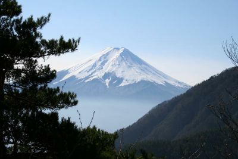
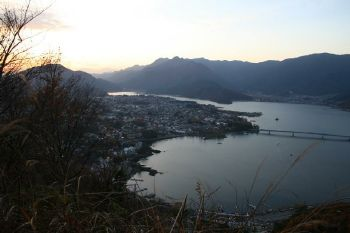
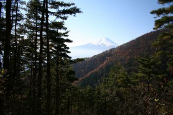
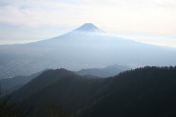
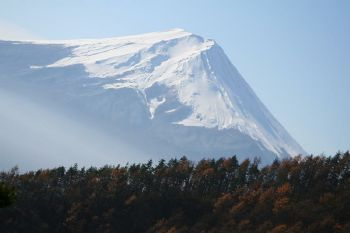
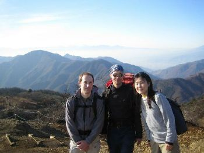
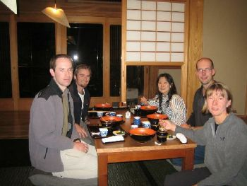

Mitsu-toge YamaNov 25, 2006(organized by Dorothee Dorner)Report by Dorothee,
|
 |
|  |
Mitsu-toge-yama (1785 m) 6-7 hours hike, 14 km long. Beginning to mid of November seems to be well suitable for this hike. The view of Fuji-san can be very clear and color of trees very beautiful. From Tsukuba the first TX Express train is too late to arrive early enough in Mitsu-toge station. Therefore the seven of us went by two cars to Mitsu-touge station, where we left the cars and started to hike. One participant came by train from Tokyo, which is possible if you get up early and change trains several times. We got very beautiful views of Fuji-san, and a panorama view of Yatsu-ga-take, Kita Alps and other surrounding mountains. The descent first led along a ridge with nice glimpse of the lake Kawaguchi-ko. We finished the hike in Kawaguchi-ko town. From there we took a train back to Mitsu-toge station, which takes about 20 min. The trains are quite frequent. In Kawaguchi-ko there are many onsen. We visited the temple onsen, which was quite nice. You can buy a combined bath and dinner ticket. So we also had dinner there, which was good. I considered the rating of the hike announcement (** to ***) as appropriate. However, one participant had many difficulties to climb the mountain. Another told me the rating should be rather *** to ****. However, there are no difficulties. It is only a bit steep ascent, no difficulties like climbing, ladders, dangerous parts, therefore I think the announced rating of ** to *** is appropriate. |
 | |
|  |  | ||
|  |  |